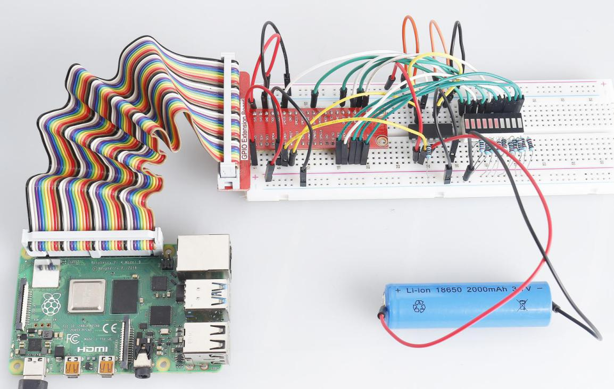

3.1.5 Battery Indicator¶
Introduction¶
In this course, we will make a battery indicator device that can visually display the battery level on the LED Bargraph.
Components¶

Schematic Diagram¶
T-Board Name |
physical |
wiringPi |
BCM |
GPIO17 |
Pin 11 |
0 |
17 |
GPIO18 |
Pin 12 |
1 |
18 |
GPIO27 |
Pin 13 |
2 |
27 |
GPIO25 |
Pin 22 |
6 |
25 |
GPIO12 |
Pin 32 |
26 |
12 |
GPIO16 |
Pin 36 |
27 |
16 |
GPIO20 |
Pin 38 |
28 |
20 |
GPIO21 |
Pin 40 |
29 |
21 |
GPIO5 |
Pin 29 |
21 |
5 |
GPIO6 |
Pin 31 |
22 |
6 |
GPIO13 |
Pin 33 |
23 |
13 |
GPIO19 |
Pin 35 |
24 |
19 |
GPIO26 |
Pin 37 |
25 |
26 |
Experimental Procedures¶
Step 1: Build the circuit.

For C Language Users¶
Step 2: Go to the folder of the code.
cd /home/pi/davinci-kit-for-raspberry-pi/c/3.1.5/
Step 3: Compile the code.
gcc 3.1.5_BatteryIndicator.c -lwiringPi
Step 4: Run the executable file.
sudo ./a.out
After the program runs, give the 3rd pin of ADC0834 and the GND a lead-out wire separately and then lead them to the two poles of a battery separately. You can see the corresponding LED on the LED Bargraph is lit up to display the power level (measuring range: 0-5V).
Code Explanation
void LedBarGraph(int value){
for(int i=0;i<10;i++){
digitalWrite(pins[i],HIGH);
}
for(int i=0;i<value;i++){
digitalWrite(pins[i],LOW);
}
}
This function works for controlling the turning on or off of the 10 LEDs on the LED Bargraph. We give these 10 LEDs high levels to let they are off at first, then decide how many LEDs are lit up by changing the received analog value.
int main(void)
{
uchar analogVal;
if(wiringPiSetup() == -1){ //when initialize wiring failed,print messageto screen
printf("setup wiringPi failed !");
return 1;
}
pinMode(ADC_CS, OUTPUT);
pinMode(ADC_CLK, OUTPUT);
for(int i=0;i<10;i++){ //make led pins' mode is output
pinMode(pins[i], OUTPUT);
digitalWrite(pins[i],HIGH);
}
while(1){
analogVal = get_ADC_Result(0);
LedBarGraph(analogVal/25);
delay(100);
}
return 0;
}
analogVal produces values (0-255) with varying voltage values (0-5V), ex., if a 3V is detected on a battery, the corresponding value 152 is displayed on the voltmeter.
The 10 LEDs on the LED Bargraph are used to display the analogVal readings. 255/10=25, so every 25 the analog value increases, one more LED turns on, ex., if “analogVal=150 (about 3V), there are 6 LEDs turning on.”
For Python Language Users¶
Step 2: Go to the folder of the code.
cd /home/pi/davinci-kit-for-raspberry-pi/python/
Step 3: Run the executable file.
sudo python3 3.1.5_BatteryIndicator.py
After the program runs, give the 3rd pin of ADC0834 and the GND a lead-out wire separately and then lead them to the two poles of a battery separately. You can see the corresponding LED on the LED Bargraph is lit up to display the power level (measuring range: 0-5V).
Code Explanation
def LedBarGraph(value):
for i in ledPins:
GPIO.output(i,GPIO.HIGH)
for i in range(value):
GPIO.output(ledPins[i],GPIO.LOW)
This function works for controlling the turning on or off of the 10 LEDs on the LED Bargraph. We give these 10 LEDs high levels to let they are off at first, then decide how many LEDs are lit up by changing the received analog value.
def loop():
while True:
analogVal = ADC0834.getResult()
LedBarGraph(int(analogVal/25))
analogVal produces values (0-255) with varying voltage values (0-5V), ex., if a 3V is detected on a battery, the corresponding value 152 is displayed on the voltmeter.
The 10 LEDs on the LED Bargraph are used to display the analogVal readings. 255/10=25, so every 25 the analog value increases, one more LED turns on, ex., if “analogVal=150 (about 3V), there are 6 LEDs turning on.”
Phenomenon Picture
